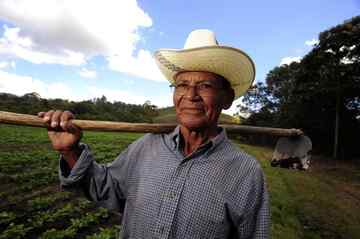
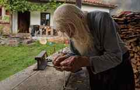
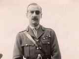
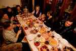
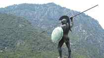
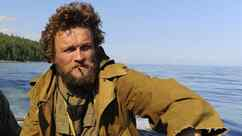

< < < Back
21 Quotes Of The Vikings’ Havamal To Guide A Masculine Lifestyle – Return Of Kings
Havamal is the words of wisdom which served as spiritual provisions for the Vikings on their long journeys over the rough sea to discover new lands. It is one of the more famous and certainly one of the most popular of the so-called Eddaic poems. Those chosen parts of Havamal are neither heroic nor mythological, but rather of a didactic nature.
Although more than a thousand years old, it seems incapable of becoming outdated, since in important respects man himself has hardly changed in the course of the centuries. The essential qualities of life, too, are still the same as they were in the day that the Havamal was written: a man who has fire, a view of the sun, good health and personal integrity is better placed than one whose life is spent in pursuit of wealth, of luxury, and impressing others. Nothing can take such a man’s life away, for although death is inescapable, his posthumous reputation will never die.
The ethics of the Havamal are relevant to the neomasculine lifestyle, above all rooted in belief in the value of the individual, who is nonetheless not alone in the world but tied by inextricable bonds to nature and society. In the old philosophy of the North, each individual was responsible for his own life, shaped by his own fortune or misfortune and created a life for himself from his own resources.
1. Worldliness
The traveller must
train his wits.
All is easy at home.
He who knows little
is a laughing-stock
amongst the men of the world.
2. The Nature Of Friendship

A bad friend
is far away
though his cottage is close.
To a true friend
lies a trodden road
though his farm lies far away
3. A Home Is a Castle

Better a humble
house than none.
A man is master at home.
A pair of goats
and a patched roof
are better than begging.
4. Caution
Never walk
away from home
ahead of your axe and sword.
You can’t feel a battle
in your bones
or foresee a fight.
5. How To Cultivate Friendship
A true friend
whom you trust well
and wish for his good will:
go to him often
exchange gifts
and keep him company.
6. Experience

He is truly wise
who’s travelled far
and knows the ways of the world.
He who has travelled
Can tell what spirit
governs the men he meets.
7. Prosperity

The brave and generous
have the best lives.
They’re seldom sorry.
The unwise man
is always worried,
fears favours to repay.
8. The Importance Of Appearances
Two wooden stakes
stood in the field,
there I hung my hat and cloak.
They had character
in fine clothes.
Naked I was nothing.
9. The Early Bird

Wake early
if you want
another man’s life or land.
No lamb
for the lazy wolf.
No battles won in bed.
10. The Nature of Secrecy
Ask you must
and answer well
to be called clever.
One may know your secret
never a second.
If three, a thousand will know.
11. The Basics Of Life
A man needs warmth,
the warmth of fire
and of the shining sun.
A healthy man
is a happy man
who is neither ill nor injured.
12. Poor – But Alive…

It is better to live
than lie dead.
A dead man gathers no goods.
I saw warm fire
at a wealthy man’s house
himself dead at the door.
13. Everyone Has His Use (as opposed to everyone is equal™)

The lame rides a horse
the maimed drives the herd
the deaf is brave in battle.
A man is better
blind than burried.
A dead man is deft at nothing.
14. Keeping Your Name Alive
A son is better
though late begotten
of an old and ailing father.
Only your kin
will proudly carve
a memorial at the main gate.
15. Hospitality

The newcomer
needs fire
his knees are numb.
a man who has made
his way over mountains
needs food and fresh linen.
16. Renown

Cattle die
kinsmen die
all men are mortal.
Words of praise
will never perish
nor a noble name.
17. Independence
It is fortunate
to be favoured
with praise and popularity.
It is dire luck
to be dependent
on the feelings of a fellow-man.
18. Responsibility

A king’s son should be thoughtful
thorough and silent
brave in battle.
A man should be happy
and in good humour
to his dying day.
19. Financial Sense
Become not
a beggar
to the money you make.
What’s saved for a friend
a foe may take
Good plans often go awry.
20. Extravagance
Load no man
with lavish gifts.
Small presents often win great praise.
With a loaf cut
and a cup shared
I found fellowship.
21. Foresight
A man should know
how many logs
stubs and strips of bark
to collect in the summer
to keep in stock
wood for his winter fires.
This book should be on everyone’s nightstand. Its words have a significant influence in the way I lead my life as a man and the decisions I take. One day, I will give a copy of it to my sons.
The edition I possess is the translation made by Björn Jonasson, with an foreword by Matthias Vithar Saemundsson, senior lecturer in Icelandic literature at the University of Iceland.
Read more: What You Can Learn About Being A Man From The Vikings